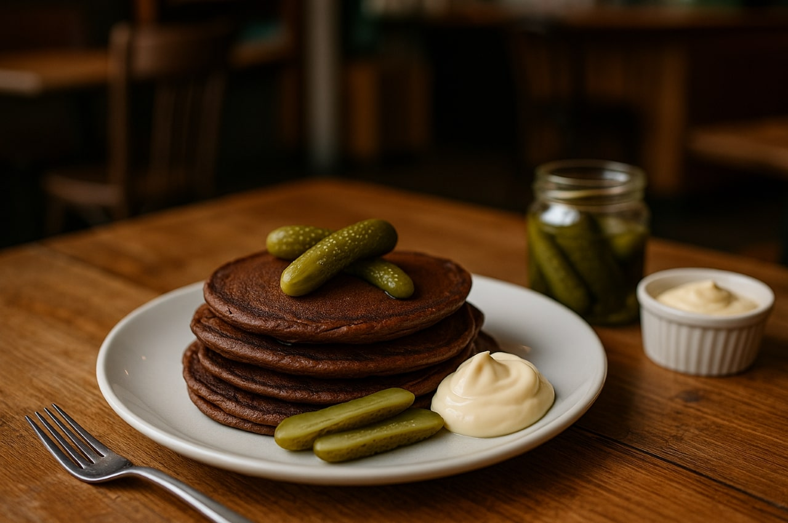

Chokladpannkakor med saltgurka och majonnäs
En provocerande men fascinerande smakmix där kakao möter syrlig saltgurka och krämig majonnäs. En kulinarisk utmaning för dig som vågar kliva helt utanför pannkakans traditionella ramar.
Ingredienser
- 3 dl vetemjöl
- 5 dl mjölk
- 3 ägg
- 2 msk kakao
- 1 msk smör
- 2 stora saltgurkor
- 1 dl majonnäs
Så här gör du
- Blanda kakao i smeten och stek pannkakor.
- Skiva saltgurka tunt.
- Lägg gurka på pannkakan och ringla majonnäs över.
Serveringsförslag
- 